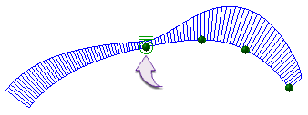

curvature continuous
curvature continuous (G2)

G2 means two objects are smoothly connected and curvature continuous. Their tangent directions and both radius of curvatures are equal. They are said to have the same curvature.
curvature continuous (G2)

G2 means two objects are smoothly connected and curvature continuous. Their tangent directions and both radius of curvatures are equal. They are said to have the same curvature.